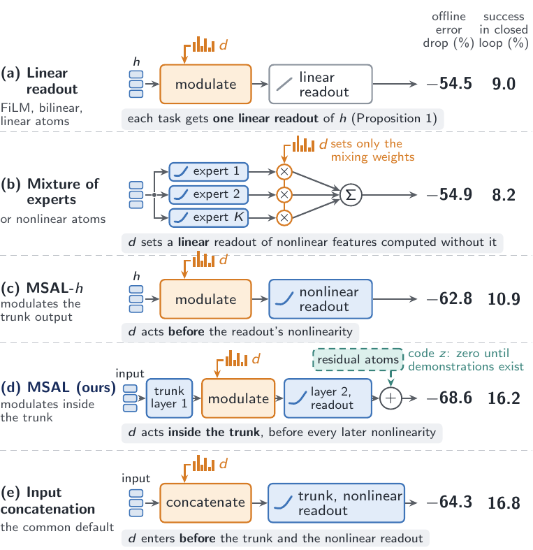
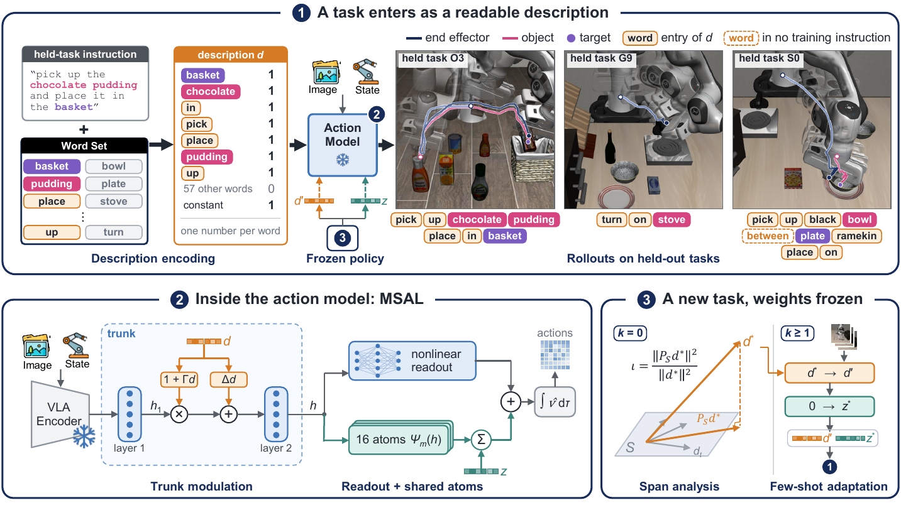
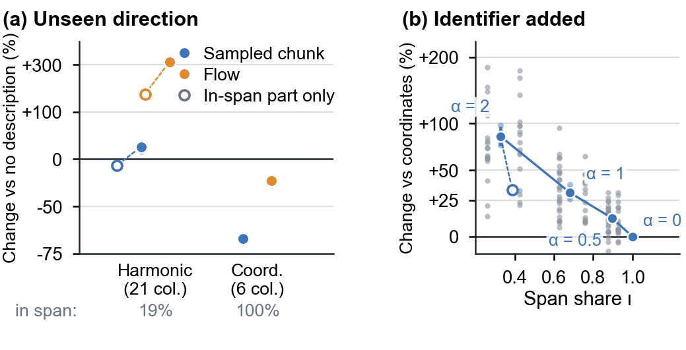
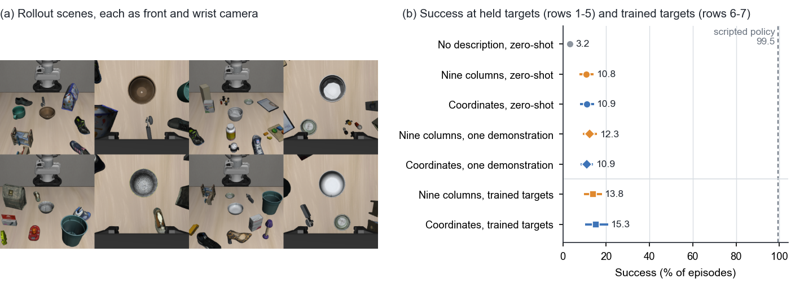

Interpretable Zero-Shot Generalization of Frozen Robot Policies via Trunk Modulation and Span Analysis
The question
A robot policy is deployed with every weight frozen, because changed weights must be validated again. New tasks keep arriving, and the policy can meet them only through a description of the task. When does it generalize zero-shot, and can that be known before the robot acts?
We show that zero-shot generalization of a frozen policy is limited by two conditions. Both can be checked before deployment, and neither guarantees accuracy.

Method
MSAL is a head on frozen features of a vision-language-action backbone (SmolVLA). The description modulates the first activation of the head's trunk, ahead of every later nonlinearity; a library of shared residual atoms adds a correction whose code enters linearly. The head is trained once on source tasks. On the robot no weight changes: a new task is predicted from its description, and demonstrations, when they exist, refine the description by gradient steps and fix the code in closed form, so a task is stored as 37 or 81 numbers.
We built first, and report throughout, a variant that modulates the trunk's output, MSAL-h. A rule written
down before the LIBERO run would have kept MSAL-h as the main method, because the trunk-modulated head was less
accurate there; we present the trunk-modulated head as MSAL nonetheless, with those results known, and give
both variants' results (plans/DECISION_HEAD_20261121.md).

Results
Condition 1 on 41 placement targets
Descriptions that enter before a nonlinear readout (MSAL, MSAL-h, input concatenation) lowered zero-shot sampled-chunk error by 63% to 69% against the same readout without task input, MSAL most; seven other heads lowered it by at most 55%. MSAL's error was 12% below that of input concatenation and 16% below MSAL-h's. On the 40 LIBERO tasks the order of the three reversed.
Condition 2 on directions never trained
With a harmonic description only 19% of a held descriptor lay in the span of the training descriptors, and the description raised MSAL's sampled-chunk error by 20%. The target's coordinates, six of the same 21 columns with a share of one, lowered it by 69%. Before training, the share predicted that appending a direction identifier would raise error in a given order; error rose in that order on both heads, by up to 85% (25% with MSAL-h). Deleting the out-of-span part of a held description lowered error but repaired neither failure: lying in the span is not sufficient.

Both conditions in closed loop
Zero-shot placement at unseen targets in cluttered scenes, 1,200 paired episodes per head (40 targets, three training seeds). The target is not marked in the images and is given only by its description. A scripted policy solved 398 of 400 scenes.

| Head | Success (%) | vs MSAL head, coordinates (points, 95% interval) | Distance (cm) |
|---|---|---|---|
| No description | 3.2 | −13.0 [−16.5, −9.6] | 10.8 |
| coordinates (span share 1) | |||
| FiLM, linear readout | 9.0 | −7.2 [−11.1, −3.4]* | 9.7 |
| Mixture of experts | 8.2 | −8.0 [−11.3, −4.7]* | 8.3 |
| MSAL-h head | 10.9 | −5.3 [−8.4, −2.1] | 6.3 |
| MSAL head | 16.2 | — | 4.5 |
| Input concatenation | 16.8 | +0.6 [−3.2, +4.2] | 4.3 |
| harmonic descriptor (span share 0.18) | |||
| MSAL-h head | 0.17 | −16.0 [−19.3, −12.7]* | 13.5 |
| MSAL head | 0.25 | −15.9 [−19.5, −12.5] | 14.4 |
* Post hoc. Intervals resample targets and episodes. The second condition held on both heads: the description that leaves the target mostly outside the span placed almost nothing. MSAL's head and input concatenation were not distinguishable. When the three training seeds are resampled as well (post hoc), MSAL's leads over no description, the linear readout and the mixture remain; its lead over MSAL-h does not, and neither does the gain from one demonstration (20.9% against 16.2%).
Scope of the results
- On the 40 LIBERO tasks, where unseen instruction words leave part of a description outside the span, MSAL-h and input concatenation were more accurate than MSAL's head, and its word description raised zero-shot error above that of a head without one.
- With language, neither a bag of words nor a pretrained sentence embedding helped zero-shot by more than a few percent on either head; on eight held-out LIBERO tasks zero-shot success was near zero, and one demonstration raised it to 10.5% (16% with MSAL-h).
- The head works on the features of a small frozen backbone; success stays far below a scripted policy or a policy trained end to end, and below replaying stored demonstrations where scenes match them.
What is in the repository
- Code: the heads, adaptation, the runner of every study, the analysis behind every number, and the
cluttered placement family (scene generation, scripted demonstrations, rollouts). In the code MSAL's head is
the arm
tfilm_nland MSAL-h's the armfilm_nl. - Registered plans: the written plan of every study, 24 of them with a SHA-256 digest
time-stamped before the runs it governs (
plans/PLAN_HASHES.log), and the record of the choice of the head. - Scores: per-fold errors and per-episode outcomes of every study, with the analysis outputs.
- Lean proofs: 39 theorems for the algebraic statements, with an axiom audit.
- Data: the two placement families are attached to the data-v1 release (see DATA.md); LIBERO and the SmolVLA checkpoint are public.